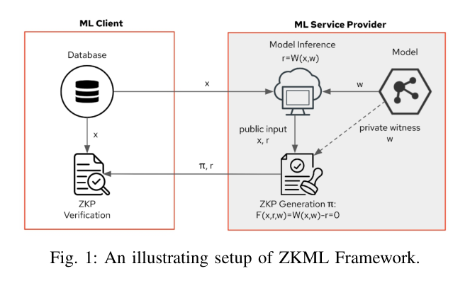
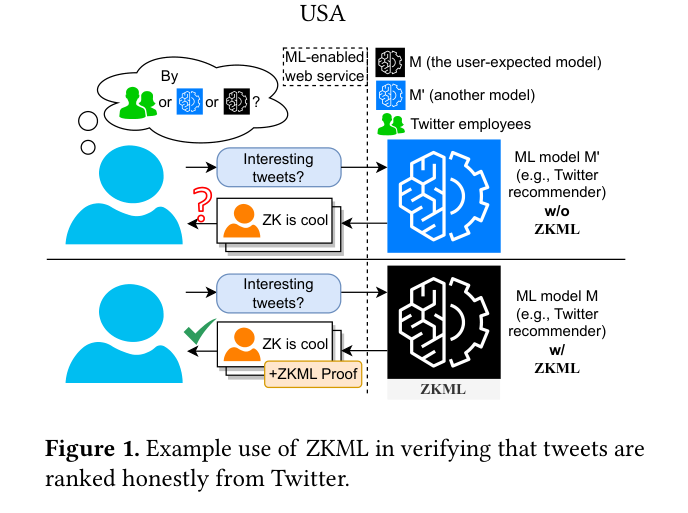
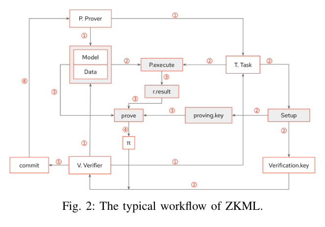
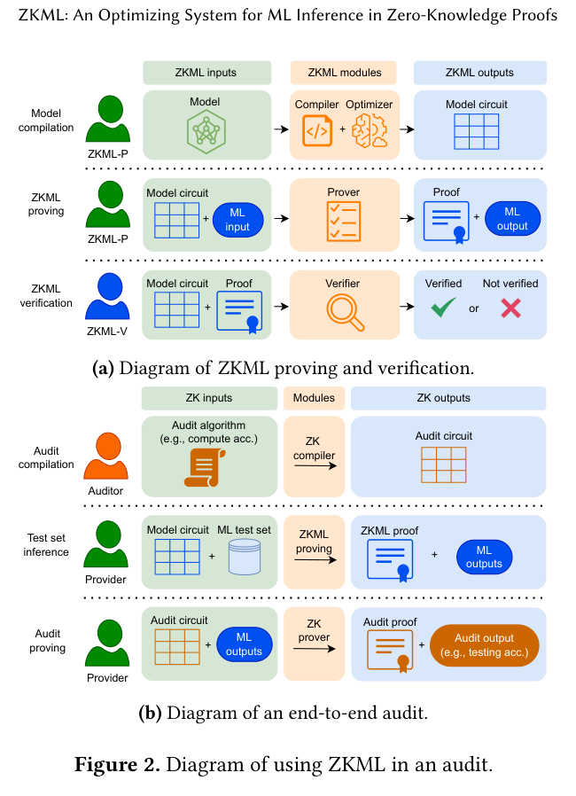
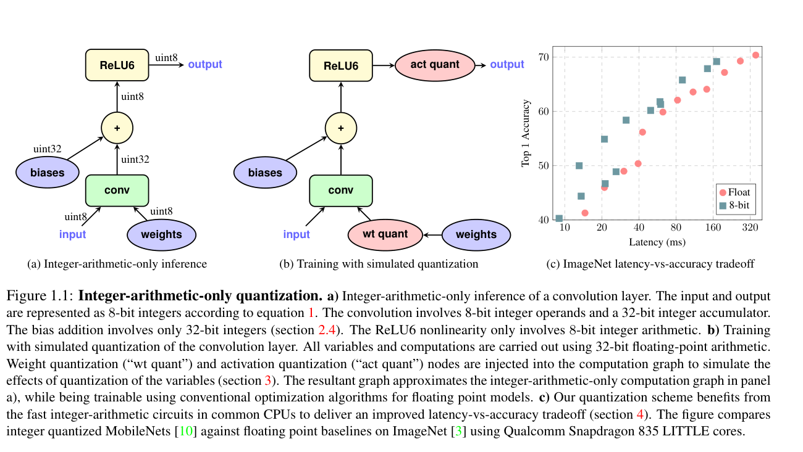
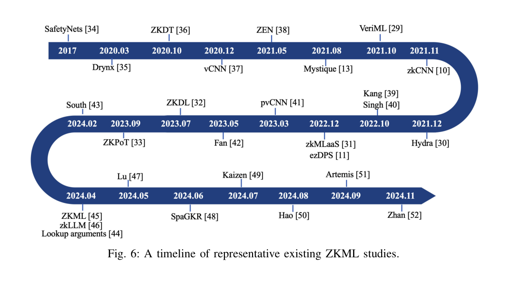
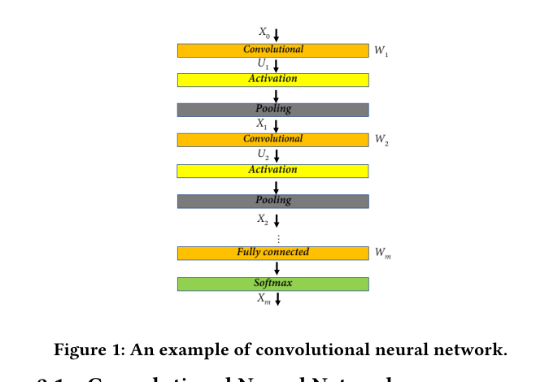
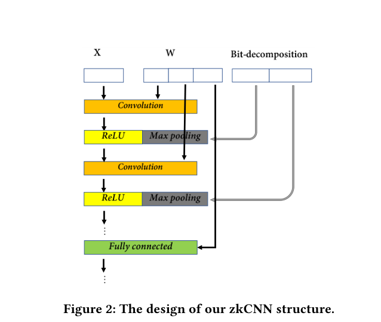
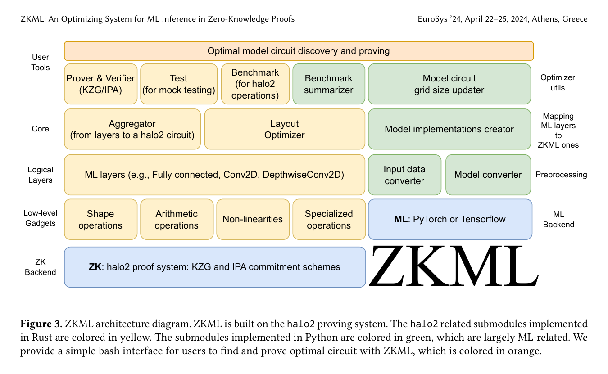
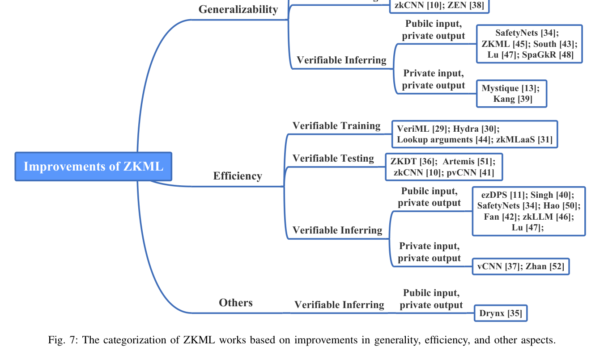

引言與核心概念
一句話總結 ZKML
「ZK × ML 的核心是：把 ML 推論/評估寫成有限域上的算術約束，讓 Prover 能在不洩漏敏感資料下，證明推論或模型性質正確。」
兩個關鍵區分
Verifiable Computation（可驗證計算）
重點是「算對沒」— Verifier 能確認 Prover 正確執行了計算，但不一定隱藏任何資訊。
Zero-Knowledge（零知識）
重點是「算對且不洩漏 witness」— 除了計算正確外，Verifier 不會獲得額外資訊。
早期工作很多是先把 verifiable 做起來，再往 ZK 推進（這是歷史脈絡的重點）。

問題背景與需求
1.1 為什麼要把 ZK 跟 ML 結合？
當 ML 推論被外包到雲端、第三方服務或區塊鏈時，會遇到以下問題：
正確性/誠實性問題
- 雲端偷懶（使用較小模型）
- 換模型（用不同於宣稱的模型）
- 回假答案（直接編造結果）
隱私問題
- 輸入敏感（醫療、金融資料）
- 模型權重是商業機密
- 不想暴露模型架構
理想目標
- Verifier 不用重算，就能確信結果正確
- 同時不取得輸入或模型（或至少其中之一）
1.2 三種典型隱私需求
| 類型 | 模型 | 輸入 | 難度 | 典型場景 |
|---|---|---|---|---|
| Type A | 公開 | 私密 | 中 | 使用者隱私保護（醫療診斷） |
| Type B | 私密 | 公開 | 中 | 模型 IP 保護（商業 API） |
| Type C | 私密 | 私密 | 最高 | 完全隱私場景（金融風控） |

密碼學抽象：把 ML 變成 ZK 要證明的「關係」
2.1 角色與流程（Prover / Verifier）
Prover（證明者）
拿到輸入 x、（可能也拿到）模型 fθ，計算 y = fθ(x)，並產生證明 π
Verifier（驗證者）
只看 statement（公開資訊）與證明 π，就能驗證計算正確性

2.2 推論關係的形式化定義（Inference Relation）
Statement / Witness / Relation 框架
| 元素 | 說明 | 範例 |
|---|---|---|
| Statement（公開） | 公開資訊，所有人可見 | 輸出 y、模型承諾 Com(f)、輸入承諾 Com(x) |
| Witness（私密） | 只有 Prover 知道的秘密 | 輸入 x、模型參數 θ、各層中間值 |
| Relation | 需要滿足的約束關係 | R(x, w) = 1 當且僅當電路輸出等於 y |

工程核心：ML 的算術化（Arithmetization）
核心問題
ZK 後端擅長處理「加法/乘法」約束，但 ML 包含浮點運算、除法、比較等非天然友善的操作。如何將 ML 模型轉換成 ZK 電路能處理的形式？
3.1 量化（Quantization）
早期幾乎必做的步驟：把 float32 變成整數/定點數，讓推論可用「整數乘加」表示。

量化公式： q = round(r / S) + Z
其中 r 為實數值，S 為 scale，Z 為 zero-point，q 為量化後整數
為什麼需要 Range Constraints？
在有限域 𝔽p 中，算術運算會發生模 p 的環繞（wrap-around）。定點推論需要額外的 range constraints 來保證數值語義：
- 確保量化值落在預期的整數範圍內（如 [-128, 127] for int8）
- 防止有限域模運算造成的溢位被誤解為合法計算結果
- 這也是 bit-decomposition / range-check gadget 存在的原因之一
3.2 線性層（Linear Layers）— 相對友善
全連接層（FC）
y = Wx + b
只需乘法和加法，直接轉換為算術約束
卷積層（Conv）
可展開成大量 dot-product
計算量大但運算類型友善
3.3 非線性/比較 — 早期最大瓶頸
「難算」的操作
3.4 早期三大解法
1. 多項式近似
把非線性換成低次多項式（只剩加乘）
改變模型語義
2. 範圍證明/位元分解
先證明值落在某範圍，再做符號/比較 gadget
成本較高
3. 查表（Lookup）
用 table 或分段逼近函數
保留語義
關鍵認知
「ZK 保證的是你定義的 relation 的正確性；但如果你用多項式近似或量化，relation 的語義本身就變了。」這不是缺點，而是 ZKML 設計必須面對的 trade-off。
早期里程碑時間線

| 年份 | 論文 | 類型 | 主要貢獻 |
|---|---|---|---|
| 2017 | SafetyNets | Verifiable | 把 DNN 推論表成算術電路，讓雲端提供短證明證明算對 |
| 2020 | ZKDT (Decision Tree) | ZK | 對決策樹給出 ZK 預測證明，並可 ZK 證明 accuracy 等性質 |
| 2020 | Polynomial Approx. | ZK-friendly | 研究用低次多項式替代 ReLU，改善近似帶來的精度損失 |
| 2021 | ZEN | Compiler | 用編譯器思維生成 ZK 推論方案，包含 ZENinfer 與 ZENacc |
| 2021 | zkCNN | ZK | 針對 CNN 結構設計更有效的 ZK 推論證明（GKR-based） |
| 2024 | ZKML (EuroSys) | System | 優化系統，自動選擇最佳電路配置，大幅降低證明成本 |
里程碑論文詳解
每篇論文都用同一個六格框架分析：Problem → Threat Model → Statement/Witness/Relation → Arithmetization → Key Innovation → Limitation
Problem
雲端推論不可信，client 想要「算對的證明」
Threat Model
不信任雲端；要保證計算正確性
Key Innovation
把 DNN 表示成算術電路，使用 interactive proof 做 verifiable execution
Statement / Witness / Relation
- Statement: 模型、輸入、輸出
- Witness: 中間計算值
- Relation: 推論計算正確
Limitation
強調 verifiable，不一定是零知識；對模型類型有限制
Problem
證明決策樹預測正確，且可證明模型 accuracy
為什麼先從 Decision Tree 做？
計算結構離散、路徑可用比較描述，容易做 ZK protocol 設計
兩類證明
- Prediction correctness：某筆輸入的預測結果正確
- Accuracy claim：模型在資料集上達到某種準確度門檻
Relation 定義
- Rinfer：證明 leaf/label 正確
- Racc：證明多筆樣本加總後達到門檻
Key Innovation
首次明確提出 ZK 不只可以證明單次推論，也能證明統計性性質（例如 accuracy）

Problem
CNN 比 tree 難：乘加多、非線性多、pool/activation 的比較更痛
Key Innovation
- 使用 GKR protocol 做分層驗證
- 設計 Sumcheck for FFT 降低卷積證明成本
- 同時支援 prediction 與 accuracy 證明
CNN 哪裡最貴？
- ReLU — 需要比較操作
- MaxPool — 多值比較
- Conv — 大量乘加
Limitation
對特定 CNN 結構優化，不是通用方案

定位
從「單一手工 protocol」邁向「compiler」的重要一步
兩個子系統
- ZENinfer：證明某次推論結果正確
- ZENacc：證明模型達到宣稱 accuracy
編譯器做了什麼？
- 模型表示（量化、層轉換）
- 電路生成（layer → 約束）
- 優化（降低成本、重用結構）
注意
ZENacc 證明的是「在特定 test set 上達到某聲明」，不是對所有輸入的保證

Key Innovation
- 自動化參數調優（logrows, lookup_bits 等）
- 建立精確 cost model 預測證明時間
- 支援多種後端（halo2, EZKL）
性能提升
- 證明時間減少 3-10x*
- 記憶體使用減少 2-5x*
- 自動找到最佳配置
*數據來自原論文 Table 2-3 的評估結果，測試模型包含 MobileNet、ResNet 等，後端為 EZKL/halo2，實際提升幅度依模型規模與參數配置而異[2]
設計空間總結

6.1 證明目標（你要證明什麼？）
Inference Correctness
單次推論正確 — 對輸入 x，模型輸出確實是 y
Model Properties
模型性質（如 accuracy）— 模型在測試集上達到宣稱的準確度
6.2 隱私目標（你要保護什麼？）
6.3 算術化策略
| 策略 | 方法 | 優點 | 缺點 |
|---|---|---|---|
| 量化（定點） | float → int | 大幅降低電路複雜度 | 精度損失 |
| 多項式近似 | ReLU → polynomial | 只剩加乘運算 | 改變模型語義 |
| Range-check | bit-decomposition | 保留原始語義 | 成本較高 |
| Lookup | 預計算表 | 保留語義、效率較好 | 表格大小限制 |
6.4 論文定位矩陣
| 論文 | 證明目標 | 隱私覆蓋 | 模型通用性 | 算術化策略 |
|---|---|---|---|---|
| SafetyNets | Inference | Verifiable (non-ZK) | 特定 DNN | 量化 |
| ZKDT | Inference + Accuracy | Type B (模型隱私) | Decision Tree | 比較 gadget |
| zkCNN | Inference + Accuracy | Type A/B 可選 | CNN | GKR + Sumcheck |
| ZEN | Inference + Accuracy | Type A/B 可選 | General DNN | 編譯器自動選擇 |
| ZKML | Inference + Audit | Type A/B 可選 | General DNN | Lookup + 自動優化 |
隱私覆蓋說明：Type A = 公開模型、私密輸入；Type B = 私密模型、公開輸入；「可選」表示系統設計支援多種隱私配置。 SafetyNets 主要強調可驗證性（correctness），隱私保護並非其主要設計目標。
早期瓶頸與未來展望
7.1 早期瓶頸
非線性太貴
ReLU/max/softmax 的比較操作在 ZK 電路中成本極高
語義差異
量化帶來語義改變 — 你證明的是 quantized 模型
規模爆炸
電路/約束規模隨模型規模（深度 × 寬度 × 非線性處理方式）快速成長，尤其在大量 bit-decomposition 或 range-check 的算術化策略下成本陡增
7.2 從早期到後來：為什麼會出現 Compiler / 工具化？
歷史必然性
- 手刻電路不可維護 → ZEN 類 compiler 思維出現
- 更大模型 → 更需要自動化與系統化
- 非線性/規模瓶頸 → 逼出 compiler 與更系統的優化
7.3 未來方向
結語
三個 Takeaways
1. 核心轉換
ZK × ML 的核心是把推論/評估變成有限域算術約束的 relation
2. 早期突破
多圍繞「怎麼便宜地處理非線性/比較」與「怎麼把工作系統化」
3. 差異維度
證明目標 × 隱私目標 × 算術化策略
參考文獻
- Chen et al. "A Survey of Zero-Knowledge Proof Based Verifiable Machine Learning." arXiv:2502.18535, 2025. arXiv
- Sun et al. "ZKML: An Optimizing System for ML Inference in Zero-Knowledge Proofs." EuroSys 2024. DOI
- Jacob et al. "Quantization and Training of Neural Networks for Efficient Integer-Arithmetic-Only Inference." CVPR 2018. arXiv
- Liu, Xie, Zhang. "zkCNN: Zero Knowledge Proofs for Convolutional Neural Network Predictions and Accuracy." CCS 2021. DOI
- Ghodsi, Gu, Garg. "SafetyNets: Verifiable Execution of Deep Neural Networks on an Untrusted Cloud." arXiv:1706.10268, 2017. arXiv
- Zhang et al. "Zero Knowledge Proofs for Decision Tree Predictions and Accuracy." CCS 2020. DOI
- Feng et al. "ZEN: Efficient Zero-Knowledge Proofs for Neural Networks." IACR ePrint 2021/087. ePrint
- Ali, So, Avestimehr. "On Polynomial Approximations for Privacy-Preserving and Verifiable ReLU Networks." arXiv:2011.05530, 2020. arXiv